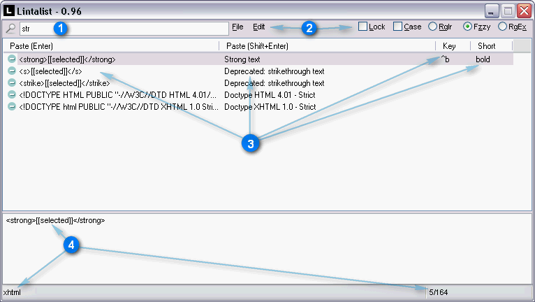
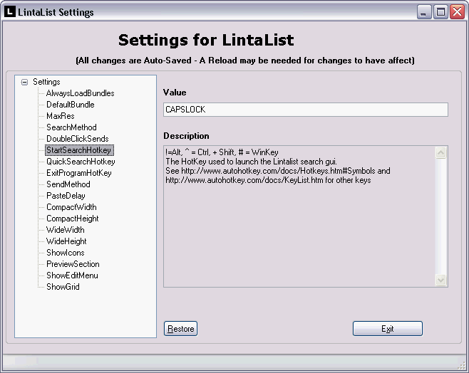
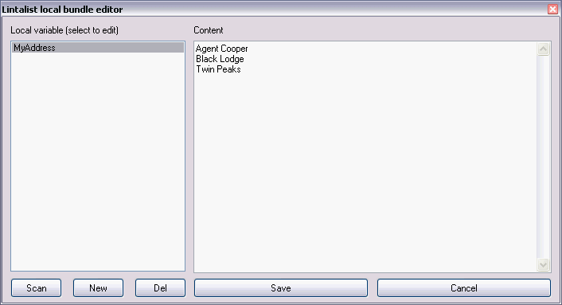
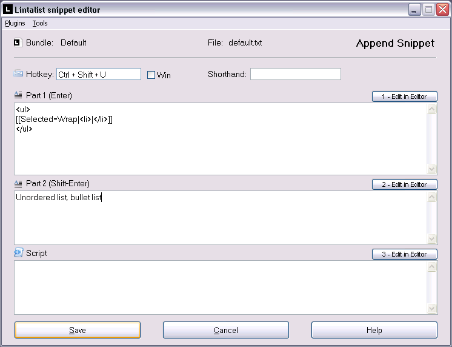
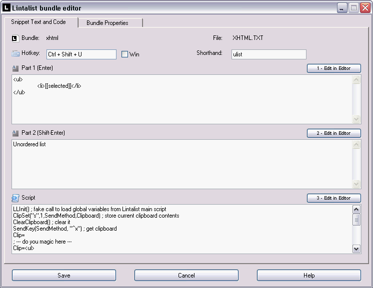

Lintalist allows you to store and (incrementally) search and edit texts in bundles and paste a selected text in your active program. The text can be interactive, for example you can automatically insert the current time and date, ask for (basic) user input or make a selection from a list etc and finally it can also run a script. You can use keyboard shortcuts or abbreviations to paste the text (or run the script) without opening the search window.
Formatted text (html, markdown, rtf and images) is supported in Snippets, and Lintalist can be extended by writing your own plugins.
Lintalist is open source and developed in AutoHotkey, an easy to learn scripting language for Windows.
[Windows 7/8/10/11] (untested under WinXP(sp3)/Vista)
doc rev. 20250531
Download Lintalist 1.9.26
Download (incl. source):
Latest release (lintalist64.zip, 1mb)
Simply unpack and run lintalist.ahk or lintalist.exe
Lintalist is a portable application. It stores all settings and bundles in the folder the program resides in. More...
Lintalist Source code:
github.com/lintalist/lintalist
Reviews
As noted above Lintalist allows you to store and (incrementally) search and edit texts in bundles and paste a selected text in your active program.
The texts, shortcuts, abbreviations and scripts are called snippets and they are stored in a so called bundle. A bundle is a simple text file, making it easy to understand, maintain and exchange bundles between users.
The bundles are context sensitive: based on the (partial) window title of the currently active program it will try to load one or more matching bundles, this will allow you to use the same shortcuts and shorthands in different applications and files making it even more flexible. You don't have to use or remember any shortcuts or shorthands because you can search your bundles at any time by opening the search window. Think of it as text-expander which will save you countless keystrokes and has a number of additional features: hotkeys, full text search, plugins and scripts.
Some might compare it to the "tag list" or "clip libraries" you might find in many text editors.
Bundles and Snippets can be edited using the Lintalist Bundle & Snippet Editors OR in your preferred text editor.
For example: If you are editing a HTML file, Lintalist could use both a HTML and CSS bundle, but if you are editing a CSS file only the CSS Bundle is loaded. So, in your HTML file the shortcut ctrl+b can insert <strong></strong> at the caret position (or wrap the tag around the selected text) and while editing your CSS file the shortcut ctrl+b can insert font-style: bold; at the caret position. If a shortcut is found in multiple active bundles a pop-up-menu will appear so you can choose which snippet & bundle you prefer.
Note: although Lintalist can expand abbreviations it is not intended to replicate or replace the native AutoHotkey Hotstrings features, see autohotkey.com/docs/v1/Hotstrings.htm for an introduction and description of all the options.
If you find this inconvenient, edit one of the snippets and change the shortcut or shorthand.
This program is written in AutoHotkey, a free, open-source (scripting) utility for Windows. Learn more at autohotkey.com.
Lintalist is a portable application. It stores all settings and bundles in the folder the program resides in.
When you run it for the very first time it does ask if you want a shortcut on your desktop or would like to automatically start it with Windows but you don't have to do that. You can run the program from a USB drive or dropbox account for example.
If you want to take your copy of Lintalist with you all you have to do is copy the Lintalist folder. Same goes for making a backup.
- Full text snippet search using four different search modes
- Context sensitive bundles
- Abbreviations for your favourite snippets (Hotstrings in AutoHotkey terminology)
- Shortcuts for your favourite snippets (Hotkeys in AutoHotkey terminology)
- Run (AutoHotkey-)scripts
- Local variables (user specific)
- Bundle converters (simple lists, CSV, UltraEdit, Texter)
- Portable application
- Plugins are easy to develop, included by default are:
- return caret to position in text
- insert date & time incl. dates and time math
- calendar
- user input
- select item from a list
- use clipboard
- use selected text
- counters (can be created on the fly)
- chain snippets (insert the text of one snippet into another)
- insert text from file
- math (calc)
- random selection
- split and reuse text
- formatted text and images using HTML, Markdown, RTF and Image
Installing Lintalist is easy, just download the ZIP file and unpack it in a folder of your preference. Make sure you have write permissions for the destination folder (i.e. don't unpack into a folder like "C:\Program Files"). It is probably easiest to work with if you place it in your "My Documents" folder as this will make it easier for Lintalist to update your bundles while you are using them. Lintalist is fully portable and doesn't write any settings to the registry, so you can run it directly from a USB flash drive or DropBox folder for example.
If you are already an AutoHotkey user and have it installed, it is recommended to run Lintalist.ahk, this will ensure you will be running Lintalist with your preferred version of AutoHotkey (v1.1.37.02 recommended). If you don't have AutoHotkey installed you can start Lintalist.exe.
Notes:
- Lintalist.exe: A renamed AutoHotkey.exe (v1.1.37.02 32/64-bit Unicode, See https://autohotkey.com/ and/or https://autohotkey.com/download/)
- Lintalist.ahk: The actual (main) source code of the program (see https://github.com/lintalist/lintalist)
If Lintalist is running you can activate the search window by pressing CAPSLOCK, the default hotkey. You can change this hotkey via the configuration menu accessible via the tray menu by right clicking on the Lintalist icon ).
Based on the active program title, one or more bundles will be loaded into the search window so you can start searching:
Lintalist search window:

1: Type query.
2: Menu + search options.
3: Result list with Part 1, Part 2, Key(board shortcut), Short(hand, abbreviation). Columns are dynamic, if part 2, key or short are not present in the loaded bundle(s) they will not be displayed.
4: Preview of top most or selected snippet text. In statusbar: loaded bundle(s) and hits / number of snippets.
If you press the same hotkey again while the Lintalist Search window is active it will toggle between the Wide & Narrow view. You can set the width and height of both views via the configuration menu.
While you type, the number of results will decrease (called incremental search or quick filter). A small icon indicates if it is purely a text snippet or if it actually will run a script . You can turn the icons on and off via the configuration menu (ShowIcons setting), you can also influence the order of the results by setting various sorting options (see SortByUsage and ColumnSort settings).
After pressing ENTER on a selected entry from the results list, by default the text (Part1) is pasted in the active program (note the explanation above). SHIFT+ENTER and ENTER will use the first item in the results list unless you have selected another item with the arrow keys. Depending on the snippet either a text is pasted OR a script is run (note explanation above).
[v1.9.7+] If you just want to copy the snippet to the clipboard and not paste it press Alt+ENTER for Part 1 and Alt+Shift+ENTER for Part 2.
You can also use the Up and Down keys to navigate through the list. You can select a different bundle or load all bundles via the Bundle menu. If you choose a bundle from the bundle menu (Alt+b), that bundle will be locked (toolbar icon:  ) and always remain active until you unlock it (Alt+l, letter l).
If enabled you can use Alt+1..0 for the first ten search results. [v1.9.9]+
What happens when you (double) click on an entry in the list is determined by a setting in the configuration menu. (SingleClickSends and DoubleClickSends setting)
Default bundle: there is also a default bundle which is always loaded - unless you lock a specific bundle - that way you always have your generic snippets available in every program.
If you have no need for context sensitive bundles, simply make use of the default bundle and put in all your snippets. In such a case you could also lock the default bundle although there should be no need to do so.
You can search for text in your bundles using four different methods:
) and always remain active until you unlock it (Alt+l, letter l).
If enabled you can use Alt+1..0 for the first ten search results. [v1.9.9]+
What happens when you (double) click on an entry in the list is determined by a setting in the configuration menu. (SingleClickSends and DoubleClickSends setting)
Default bundle: there is also a default bundle which is always loaded - unless you lock a specific bundle - that way you always have your generic snippets available in every program.
If you have no need for context sensitive bundles, simply make use of the default bundle and put in all your snippets. In such a case you could also lock the default bundle although there should be no need to do so.
You can search for text in your bundles using four different methods:
| Method |
Description |
| Rglr | Alt+r is Regular or Normal search: the text you type must be found literally
Example:
Typing 'searching text' will find 'searching text' but NOT 'searching for text' |
| Fzzy | Alt+z is Fuzzy search: the text you type can be found anywhere making it more
flexible to narrow down the results.
Example:
Typing 'sea tex' will find 'searching text' but ALSO 'searching for text' or 'text about the sea' |
| RgEx | Alt+x is Regular Expression search (Perl-compatible, PCRE) so you can search for patterns
Example: se\w*g will find 'searching' 'sewing' etc.
See autohotkey.com/docs/v1/commands/RegExMatch.htm for more information
about using Regular expression for searching [see notes about RgEx search below
for some background info as not ALL Regular Expressions may produce the expected
results] |
| Magc | Alt+m is Magic search (QuickSilver like search - experimental)
Example:
Typing 'sax' will find 'searching text' |
Case (in)sensitive search
Use Case
Alt+
c to make your searches case sensitive.
In the area below the search results you will see the preview window of the currently active item in the bundle (Part1 by default but this can be changed via the configuration menu and settings.ini).
The statusbar shows which bundles are loaded and how many items were found out of the total items.
You can control the maximum number of search results and the maximum number of snippets that you can see in the results list.
It will search for a match in
Part1,
Part2 and
Shorthand (so not in the Shortcut and not in the Script code). Note that in order to show a more legible text in the results list, Part1 and Part2 are shown differently if they are multi-line texts:
A new line is replaced by
\n and a tab by
\t and it will search
these texts and not the original multi-line (but the original ones will be used when the texts are pasted, once you see it in action couple of times you will get used to it pretty quickly)
<techtalk> If the
Case check-box is not checked your searches will be case-insensitive. When using the RegEx search method the "i)" option for the regular expression will automatically be inserted before each snippet is searched. This may lead to unexpected results if you pass on other options for your RegEx search.
Example: The case-insensitive RegEx 'se\w*g' it is actually using the following regular expression 'i)se\w*g' while searching. This is done for convenience (otherwise you would have to type i) every time you wanted to do a case-insensitive search (RegEx is by default case sensitive). If you want to pass on extra options it is best to turn Case sensitive ON and add the options you need as described here
autohotkey.com/docs/v1/commands/RegExMatch.htm#Options. This behaviour may change in future version of Lintalist.
</techtalk>
Search letter variations [v1.7+]
Sometimes accented letters are part of the text you are searching for. These can be difficult or slow to type. By adding the variations of these letters to the search string you can search for 'cafe' but still find 'café'. So the 'e' in the query will be translated to searching for 'eéèêḙěĕẽḛẻėëēȩęᶒɇȅếềễểḝḗḕȇẹệæǽǣœᵫ'.
When active all search modes will use a Regular Expression (Regular and Fuzzy)
(De)Activate the setting via the
Lv button in the Search GUI (
Alt+
v) or the
SearchLetterVariations setting in the Configuration menu.
More information in the comments of 'include\LetterVariations.ahk'
By default you are only searching in the loaded bundles, you can however search in all bundles using the following methods:
1. Load All Bundles
You can Load all bundles:
- use the tray many, select Load all bundles and bring up the search GUI; or
- bring up the search GUI, bundle menu, first option: Load all bundles
This has the disadvantage that it also sets the Locked state so next time you bring up the search GUI you are searching in all bundles again and you have to unlock it.
2. Omnisearch query
When you start your query with a predefined character (
@ by default) Lintalist will search in all bundles independent of the ones that are currently loaded or locked in the search Gui. You can define this character in the settings (OmniChar). If you don't want to use Omnisearch while typing a query simply disable it by erasing the OmniChar in the settings menu.
Query: state -> will find "state" in the currently loaded bundle(s)
Query:
@state -> will find "state" in all bundles
3. Omnisearch shortcuts
- While search GUI is active: press
F2 to toggle the Omnisearch.
- If you press
Ctrl+
Capslock the search GUI is opened in Omnisearch mode (tip: use
F2 to toggle). You can define the hotkey in the settings -
StartOmniSearchHotkey
Note: while using option 2 & 3 the text "(All)" will be added to the statusbar (bottom right) to indicate you are using Omnisearch when the results are updated.
By default Lintalist tries to find matches in
part1, part2, and
shorthand of a snippet
while searching.
When you start your query with a number (1 to 6), followed by a predefined character (
< by default,
ColumnSearchDelimiter in the settings) Lintalist will search in a specific part of a snippet. To disable this feature erase the
ColumnSearchDelimiter in the settings.
Query: state -> will find "state" in part1, part2, and shorthand of a snippet
Query: 1
<state -> will find "state"
only if it is found in
part1 of a snippet
1 to 5 refers to the
"part" or "section" of a snippet (6 to the bundle name + description if any):
1< Part1
2< Part2
3< Shortcut (key)
4< Shorthand (abbreviation)
5< Script
6< Bundle name and description
Start the query with the OmniSearch character to combine it with ColumnSearch (e.g.
@1
<state)
By default bundles use the TitleMatch property to determine which snippets to use. In order to always use a specific (set of) bundles:
1. Use All Bundles all of the time - see
Load All Bundles
2. Load a specific bundle from the Bundle menu.
3. Use the
lock toolbar icon:
, or shortcut
Alt+
l
See also
FAQ 5.
If the snippet definition includes a shortcut and is part of a currently active bundle you can insert
the text from Part 1 OR
run the script by pressing the hotkey WITHOUT activating the Lintalist search window. Shortcuts are disabled while the Lintalist search window is active.
You can enable / disable the use of Shortcuts via the Tray menu, or the button in the toolbar in the search window
If the snippet definition includes a shorthand and is part of a currently active bundle you can insert
the text from Part 1 OR
run the script by typing the abbreviation (= the shorthand) followed by a
Space or
Tab WITHOUT activating the Lintalist search window. Shorthand is disabled while the Lintalist search window is active.
You can enable / disable the use of Shorthands via the Tray menu, or the button in the toolbar in the search window
Apart from the hotkeys defined in bundles, Lintalist has two general sets of hotkeys, one while Lintalist waits in the background and one while the search window is active. Bring up the search window just press
CAPSLOCK (default setting)
Shortcuts while search window is not active
| Keys |
Description |
| Capslock | Start Searching (Open Lintalist search window, change via configuration, StartSearchHotkey setting). If already active you can toggle between Wide and Narrow view.
As of v1.9.10+ there is a setting to also use this key to Hide the search window: StartSearchHotkeyToggle. |
| Ctrl+Capslock | Start Searching in Omnisearch mode (Open Lintalist searching window, change via config). |
| Winkey+z | Start Quick search |
| Ctrl+Winkey+q | Quit Lintalist |
Active Lintalist Gui
| Keys |
Description |
| Esc | Close/Hide Search Window |
| Up, Down | Scroll through results, NumpadUp and NumpadDown also work. |
| Enter | Paste Found Text (Part 1) or Run Script *1 |
| Shift+Enter | Paste Found Text (Part 2) or Run Script *1 |
| Ctrl+Enter | Paste Found Text (Part 1) and DO NOT run script |
| Ctrl+Shift+Enter | Paste Found Text (Part 2) and DO NOT run script |
| Alt+Enter | Copy Text (Part 1) to clipboard *2 |
| Alt+Shift+Enter | Copy Text (Part 2) to clipboard |
| Ctrl+Alt+Shift+Enter | Join Part1 and Part2 as one text to Paste or Copy to Clipboard (see BothParts* settings) and DO NOT run script |
| F2 | Omnisearch (toggle) search in all bundles |
| F4 | Edit Snippet |
| F5 | Copy Snippet and Edit (current bundle) |
| F6 | Move Snippet to another bundle |
| F7 | Add new Snippet |
| F8 | Delete Snippet |
| F10 | Bundle properties |
| Ctrl+1..5 | 1: Sort Part 1 (toggle)
2: Sort Part 2 (toggle)
3: Sort Shorthand (toggle)
4: Sort Key (toggle)
5: Sort Bundle name (toggle)
The sort will work even the column is not visible - for example if you do not show the Bundle name in the search results (see DisplayBundle) you can still sort it. |
| Alt+1..0 | You can use Alt+1 to Alt+0 for the first ten search results. The visual cues are disabled when using ColumnSort other than "NoSort"
These can be disabled via the ShortcutSearchGui setting (Configuration). |
| Ctrl+t | Toggle Search Window on top on or off. (per search instance) |
| Ctrl+f | Set focus on the search box. |
| Tab | Set focus on the search results (listview) - useful for screenreaders such as NVDA. |
*1 - If Scripts are Paused the script - if any - will not run and text will be sent
- The action for a single- or doubleclick with the left mouse button can be defined in the Configuration menu
(
SingleClickSends and
DoubleClickSends)
*2 This can be used get the selected snippet into the clipboard using other methods as well, see plugins\readme-howto.txt, "Extending Snippet processing" section
Lintalist Plugins
| Keys |
Description |
| Ins | Inserts the search query in the input control when using [[Input]] and [[Choice]] (with search option). Discussion @ GH - #280 |
| F3 | [[FileList/Choice]] toggle preview window to view an image if the FileList has returned full paths. If an option in choice seems to be a valid path (a-z:\) it automatically opens the preview window. (Also supports a limited number of text formats: txt,md,html,css,ahk,cmd) Discussion @ GH - #239 |
-
Load All Bundles
-
Configuration
-
Reload Bundles
-
Pause Lintalist
-
Pause Shortcut
-
Pause Shorthand
-
Pause Scripts
-
Help
- Exit
You can tell Lintalist to simply load all bundles via the Tray menu or Bundle menu (
Alt+
b), these will automatically be locked until you either choose a specific bundle from the Bundle menu OR unlock it (
Alt+
l) in search window).
If you have added or removed a new bundle you must reload them all to ensure they are read in memory so they can be searched and new or changed shortcuts and shorthands are correctly updated.
You can pause Lintalist entirely or pause Shortcuts, Shorthand and Scripts separately. Note: you can also bypass a script with Ctrl-Enter and Ctrl-Shift-Enter, see
Lintalist Keyboard Shortcuts if you select a snippet in the search window.
You can either edit the settings.ini file directly with a text editor (like notepad) or use the more user friendly configuration window which is available via the tray-menu. In order for the changes to take effect you must reload the application after changing any settings. If you
edit settings.ini manually be sure to exit Lintalist first otherwise any changes you make might be overwritten by reloading Lintalist.
A description of all settings can also be found in settings.ini
Some important options:
| Config |
Description |
| SendMethod | If you experience any problems with the way text is sent to the various applications you use,
you should try various methods to see if it resolves the issue:
1 = SendInput
2 = SendEvent
3 = SendPlay
4 = ControlSend |
| PasteDelay | If the text of the snippet is not pasted in to your application after a search, shortcut
or shorthand you could try to increase the number of Milliseconds before the text is
pasted. |
| TriggerKeys | If Shorthand is activate by default pressing a TAB and SPACE key will expand abbreviations. You can limit this to just the TAB or SPACE by editing this setting. You can also use other keys such as F1-F12 for example.
More options may be added in future versions such as special hotkeys. |
| DoubleClickSends | You can change what happens if you double click on an entry in the search results:
1 = Paste Part1, as enter e.g. run script if present
2 = Paste Part2, as shift-enter e.g. run script if present
3 = Paste Part1, as ctrl-enter e.g. always paste part1 even if script present
4 = Paste Part2, as ctrl-shift-enter e.g. always paste part2 even if script present
5 = Edit snippet
6 = New snippet
SingleClickSends as of v1.4 you can also use a single click for the same actions above.
|
| DefaultBundle | File name e.g. default.txt
If no matching bundle can be found based on the window title load this bundle. |
| AlwaysLoadBundles | File name(s) e.g. default.txt,bbcode.txt,css.txt
Bundles you always want to be loaded as comma separated list.
So Lintalist will try to load one or more specific bundles based on the currently
active application AND will always add the bundles listed here as well. |
| MaxRes | The number of maximum results while searching (loaded bundle(s) may be very large,
this will make the program more responsive) |
| StartSearchHotkey | The Shortcut (Hotkey) used to launch the Lintalist search window
(Capslock by default)
If you press this Shortcut while the Lintalist search window is active it will toggle
between Wide & Narrow view (you can set the width and height of both views via the
configuration menu)
Note about TeamViewer: the "send key combinations" option must be enabled (checked) and you may need to experiment with a short/key combination that works for you (the default QuickSearchHotkey shortcut does seem to work out of the box for example, while Capslock may not). Discussion @ GH - #104
As of v1.9.10+ see the StartSearchHotkeyToggle setting to Show/Hide the Search Window using the same shortcut. |
| QuickSearchHotkey | Hotkey used to start quick search: It will cut (ctrl-x) the word to the left, open
Lintalist and starts a search. If only one match is found it simply pastes or runs
the result directly.
Note that some editors cut or copy an entire line if no selection is made (UltraEdit,
Sublime Text, Editpad ...) so it may lead to some unexpected results.
If you work with such an editor make sure you have always selected some text before
you start this. Some editors will allow you to change this behaviour (UE).
If you want to disable QuickSearchHotkey simply delete the hotkey in the configuration (make it empty)
|
| PreviewSection | What to show in the preview area:
1 = Text of part one of snippet (recommended)
2 = Text of part two of snippet (fall back on Part 1 if Part 2 is empty)
3 = Script code of snippet (fall back to Part 1 if 3 is empty) |
| PasteMethod | Retain current clipboard or set it as current clipboard content
0 = Paste snippet and retain current clipboard content (=default behaviour)
1 = Paste snippet and keep it as the current clipboard content (so you can manually paste it again)
2 = Don't paste snippet content but copy it to the clipboard so you can manually paste it.
[v1.9.7+] Plugin [[PasteMethod]] similar to global setting but now acts on snippet basis.
|
| OnPaste | Exit Lintalist after pasting snippet?
0 = No
1 = Yes |
| Statistics | Default setting: turned off.
You can keep track of bundle and snippet usage by activating the Statistics. View the Stats via the Tray- or Edit menu options (Search GUI).
The Statistics are saved to statistics.ini every two hours while Lintalist is running, viewing the Statistics, and closing the program.
Note that not all the Statistics may be a 100% accurate. Discussion @ GH - #112 |
| AlternateRowColor | Defines the alternating background colour of Rows in the Search Results (listview).
6-digit hexadecimal RGB (RRGGBB) format. (eeeeee or c0c0c0 are light gray). Set to empty value to disable.
Related: AlternateSelectionColor (define colour of highlighted row in search results). |
Edit settings.ini (close Lintalist first) or choose configuration in the tray menu for more options and restart to apply changes.
Settings

You can define multiple caret locations in your snippet, see
the caret plugin for a brief introduction.
Detailed information on how to setup
MultiCaret.ini in
docs/MultiCaret.md.
By default Lintalist uses
ctrl+
c,
ctrl+
v to copy and paste.
If you need to use other shortcuts in specific programs (console or graphics applications for example) you can define these in
AltPaste.ini, see
docs/AltPaste.md for more information.
Some programs require CRLF to be used for pasting a new line into the document/control (notepad.exe for example) - otherwise pasting a snippet will have its new lines (enters, returns) 'removed' or so it seems:
line1line2line3
vs
line1
line2
line3
For specific programs you can define the character that needs to be used instead of the default "new line" character. This can either be one single character or multiple characters - see the linefeed.ini for more information. As an example two programs are already included, [notepad.exe] and [wordpad.exe].
This can also be useful in for applications where pasting (CR)LF may be seen as "enter" which would (accidentally) execute / start process (command line applications for example) - replacing linefeed(s) with a space would prevent this.
Discussion @ GH - #65
If you want to perform some special action after Lintalist performs a copy or paste you can create a file in the include\ folder:
Mandatory filename: AfterPaste.ahk
The code is #include-d directly after the paste or copy command (in default.ahk) but before restoring the clipboard. It can not contain functions.
You can use "If (Keys = [ShortcutCopy|ShortcutPaste|ShortcutCut])" to determine when you want an action to be performed - see NVDA example below.
If you want to use this in scripts as well be sure to include LLInit() in your script code so the proper values of ShortcutCopy, ShortcutPaste, and ShortcutCut are made available in the script.
To show a menu to insert templates into the script editor (on right click):
1. Create a folder named
ScriptTemplates in the Lintalist folder (so where lintalist.ahk/exe is residing.)
2. Any *.ahk files placed in the folder will appear after a right click in the edit control. Changes to the folder contents will only appear in the editor after restarting lintalist. (This menu is only shown in the script section of the snippet editor, e.g. the third editing section at the bottom).
Discussion @ GH - #256
<expert option>
The Lintalist Search and Snippet Editor have a 'Tools' menu with the above 'Bundle Converters'.
Create a
UserTools.ini in the Lintalist folder (where
settings.ini also resides) to add new options to this Tools menu.
Format:
name of menu option=path\program-to-run.exe (quotes around paths with spaces)
[Settings]
Notepad=c:\windows\notepad.exe
Paint=mspaint.exe
To remove these tools delete or rename UserTools.ini and restart Lintalist.
Discussion @ GH - #275
</expert option>
The Lintalist Search GUI and Snippet Editor can be styled using Themes defined in INI files.
Support will remain somewhat rudimentary. Given the limitations of AutoHotkey in this regard not all (parts of) the controls and Windows can be styled. There might also be some undesired flickering or some controls may loose their theme color temporarily. GUIs used by Plugins are not styled.
Description of how Themes work and can be made here
themes/Themes.md
Example themes @
https://github.com/lintalist/lintalist-themes (unpack zip file to lintalist\themes\)
Discussion @ GH - #147
If you want Lintalist to let NVDA speak the text of the snippet that has been pasted you can make use of some additional code.
For NVDA users there is a ready made AfterPaste.ahk
To make it work you need:
1. AfterPaste.ahk - download directly here
https://raw.githubusercontent.com/lintalist/Lintalist-AfterPaste/master/AfterPaste.ahk ( Repository
https://github.com/lintalist/Lintalist-AfterPaste )
2. nvda.ahk - download directly here
https://raw.githubusercontent.com/hi5/nvda-autohotkey/master/nvda.ahk
3. NVDA Controller DLL files - download directly here
http://www.nvda-project.org/nvdaControllerClient/nvdaControllerClient_20100219.7z or here
https://github.com/hi5/nvda-autohotkey/blob/master/nvdaControllerClient_20100219.7z?raw=true
Place AfterPaste.ahk and nvda.ahk to the lintalist\include folder.
Place the nvdaControllerClient32.dll and nvdaControllerClient64.dll files to the Lintalist main folder where lintalist.ahk and lintalist.exe are also located.
Restart Lintalist.
If NVDA is running the text of the snippet should be spoken after it has been pasted.
Note that NVDA may speak additional characters if you are using a shorthand. The combination of NVDA and AutoHotkey does not always work 100% correct when it tries to delete the typed characters before replacing it with the snippet text.
You can modify AfterPaste.ahk to better suit your needs, this may include additional calls to the nvdaCancel() function or additional Sleep to allow Lintalist more time to paste the text.
If you are using scripts and use SendKey(SendMethod, ShortcutPaste) to paste the clipboard, it will automatically Speak it as well as the default code in AfterPaste.ahk takes care of it.
Basic structure of a Lintalist bundle
Although the preferred format for many applications that support bundles, taglists, clip-lists, or snippets appears to be XML or INI, the Lintalist Bundle Format is just a formatted text file which is easy to understand and edit.
Due to its YAML like structure* it is not as cumbersome as XML to edit in a regular everyday text editor. You can edit bundles using Lintalist as it has a
built-in editor which can
edit,
copy,
move,
add, or
remove snippets from bundles or
create new bundles from scratch. There are also some
bundle converters available to import data from other applications.
* Inspired by Textpow http://textpow.rubyforge.org/svn/mm/manual.mm
A Lintalist bundle has some resemblance to YAML. [ For those interested in YAML and AutoHotkey, there is a parser available for AHK, see www.autohotkey.com/forum/viewtopic.php?t=60670 (and others) ]
The bundles (text-)files are stored in the
bundles\ directory. Once you start editing bundles, a backup will be made and copied to
bundles\backup\.
A bundle consists of one or more snippets. A snippet consists of five sections:
| Section |
Description |
| Part1 *1 | Text to paste into active application by pressing Enter, OR run script |
| Part2 *1 | Text to paste into active application by pressing Shift-Enter, OR run script |
| Hotkey | Paste text from Part1 in active application without searching OR run script |
| Shorthand | Expand abbreviations, similar to AutoHotkey. Paste text from Part1 in active application without searching OR run script. |
| Script *2 | If a snippet has a script the Text from Part1 will NOT be pasted but instead the script will be run if Enter or the Shortcut-key keys are pressed. |
What happens when you double click on an entry in the list is determined by a setting in the configuration menu. (
DoubleClickSends setting)
It is advised to always have some useful content in Part1, this will ensure you can always see what you select while searching, even it if the selected snippet runs a script.
*1 This allows you to search for one thing while pasting another, useful for translations or help texts or ... whatever you can think of. Look at the countries.txt or ahk.txt bundles for examples.
Note: If the part you are trying to paste is empty it will revert to the other part if possible.
*2 The script is regular AutoHotkey code, see
Bundle format for more info.
Example of a Bundle with one Snippet:
| BundleFormat: | 1 | |
| Name: | CSS | |
| Description: | Bundle for Lintalist | |
| Author: | Author | |
| TitleMatch: | .css | |
| Patterns: | | |
| - LLPart1: | border-radius: ^|px; | |
| LLPart2: | border-radius: [[input=Border radius]]px;
-moz-border-radius: [[input=Border radius]]px;
-webkit-border-radius: [[input=Border radius]]px;
| |
| LLKey: | ^+b | |
| LLShorthand: | bdrs | |
| LLScript: | | |
As described above, a snippet consists of two parts which are both shown in the search results (if both are present).
While you can perfectly use Lintalist without ever having to use the Part2 of the snippet, it can be of value in a number of cases.
Usage 1 - having two options to paste
By having a snippet consisting of two parts, you can search for one type of information, but paste something else.
This is illustrated by the
Countries bundle here.
In Part1 of the snippet you will find the official ISO name, and in Part2 the two letter alpha code, e.g GB for United Kingdom, CA for Canada. This lets you look up a country and either paste the official name by pressing
Enter, or if you need it, the two letter alpha code by pressing
Shift+
Enter.
| Paste Part1 (enter) |
Paste Part2 (shift-enter) |
| United Kingdom |
GB |
| Canada |
CA |
Usage 2 - description / title
You can also use Part2 as a short title to describe the purpose of Part1. In the Markdown bundle below Part2 is used as a description, that way you can for example search for 'bold' to find the bold snippet, this would not be possible without a useful description in Part2 as the markup code in Part1 does not have any useful information to search for.
| Paste Part1 (enter) |
Paste Part2 (shift-enter) |
| ### ^| |
Heading 3 |
| **[[selected]]** |
Bold |
| __[[selected]]__ |
Italic |
If you have several very similar snippets in a bundle, you can add some info in Part2 of the snippet so the second column in the search results will help you find the correct one:
| Paste Part1 (enter) |
Paste Part2 (shift-enter) |
| very long snippet that looks similar to many other snippets in the bundle.... |
FAQ |
| very long snippet that looks similar to many other snippets in the bundle.... |
Email |
| very long snippet that looks similar to many other snippets in the bundle.... |
Excel |
Another example would be time-sheet management. Often certain types of jobs or clients have special codes assigned to them. Instead of having to remember these codes you can simply create a bundle which would allow you to search for a clients name and paste the code in your time-sheet.
| Paste Part1 (enter) |
Paste Part2 (shift-enter) |
| 1578A |
John Smith |
| 6335D |
Ms. Jones |
| X-7685 |
Replaced plumbing |
Part1 and/or Part2 of a snippet can have special codes to insert specific data.
The following
Snippet Codes (or plugins) are available.
You can develop your own if you learn to write AutoHotkey scripts, see
plugins\readme-howto.txt for more info.
Reminder: You can also use
Formatted Text Snippets (html, markdown, image and RTF).
Plugins are processed as follows:
1. Local variables first
2. Process each plugin in the order they are presented in the snippet e.g. left to right.
3. If it is a nested plugin: the order is from the left to right AND from the inside out.
Consider the following example:
This is [[plugin1]]
we continue with a triple nested plugin:
[[plugin2 [[plugin2-1 [[plugin2-1-1]] ]] ]]
and ending with
[[plugin3]]
The plugins are processed in the following order:
1. [[plugin1]] is processed first
2. followed by [[plugin2-1-1]] followed by [[plugin2-1]] followed by [[plugin2]]
3. and finally [[plugin3]]
Available plugins:
[[..]] (Double square brackets) are used for plugin snippet notation. You can escape these double square brackets to prevent them being interpreted as a plugin:
\[\], and \]\]
To escape [,], and | in the options of a plugin, use: <SB, >SB, and ^SB. See ParseEscaped in settings.ini to change this.
| Code & Parameters |
Description |
^| or ^$ | Caret position after pasting.
Basic example: "Hello, this is a sample ^|text"
The ^| (or ^$) code will be removed from the text and the caret will
be placed before the word `text`.
Alternative notation: ^$ useful when you want to use this in combination with the Choice plugin where the | character would cause a problem - Discussion @ GH - #124
If you paste a snippet into an editor which supports Multi-caret/edit you can use those in Lintalist snippets by placing multiple caret locations in your snippet. If you don't want to use MultiCaret simply avoid using multiple ^| in a Lintalist snippet.
Supported editors: Atom, Brackets, EverEdit, Komodo Edit, Sublime Text, TextAdept, UltraEdit 23+, Visual Studio Code editor. See docs/MultiCaret.md for details.
Notes:
1. The caret position may be incorrect for snippets with Unicode characters, complex scripts, glyphs etc. (trial and error may work). It may also depend on how the target application handles (auto) indentation or reformats/prettyfies pasted code. In such cases a specific script may be able to resolve such issues - Discussion @ GH - #123
2. For screenreaders: the plugin consists of two characters, a Circumflex Accent followed by a Vertical bar or pipe symbol. A Circumflex Accent followed by a dollar sign is also permitted. |
[[C=Char|Repeat]] | By default pasted texts are trimmed which means spaces and tabs will be trimmed from the snippet. You can use this plugin to insert one or more spaces and/or tabs at the beginning or end of a snippet. Or you can use it as a shorthand-code to insert a repeating text or character(s).
Basic example [[C=-|30]] insert 30 -'s
Use [[C=space]] or [[C=\s]] for a space, [[C=tab]] or [[C=\t]] for a tab, and [[C=enter]] or [[C=\n]] for a new line.
Neat trick: using a local variable or User input
[[C=[[Var=localvar]]|10]] Repeat the local variable 'localvar' 10 times.
[[C=[[Input=Repeat which character|-]]|[[Input=How many times?|10]]]] Repeat the entered character(s) 10 times.
Create a HTML table asking for Number of Columns and Rows:
<table>
[[C=<tr>[[C=<td></td>|[[Input=How many columns?]]]]</tr>
|[[Input=How many rows?]]]]</table> |
[[Calc=]] *2 | Evaluation of the math expressions - see documentation below. |
[[Calendar=Format|LCID|to]] | Displays a calendar window to allow you to select a date in a specific format (see DateTime below).
Basic example [[Calendar=dd-MMM-yyyy]] --> Select a date and it will be inserted like so: 25-Jan-2011
[v1.8+] You can now specify an LCID. If you do not define one, the current user's locale is used to format the Date string. To use the system's locale instead, specify LSys. To use a specific locale, specify the letter L followed by a hexadecimal or decimal locale identifier (LCID). You can find a list of Locale IDs assigned by Microsoft here msdn.microsoft.com/goglobal/bb964664.aspx
If you use a date range (e.g. start/end date) the word " to " is automatically inserted between the two dates, if you want something else such as another language or character (" - ") simply specify this as the third parameter:
[[Calendar=dd-MMM-yyyy|| - ]]
|
[[Choice=item1|item2|..]] | Selected an item from a list.
The options are delimited by a | character.
Basic example [[Choice=Red|Green|Blue]] inserts the selected colour in the text.
[v1.9+] If the first option starts with a question mark (?), the first option will be removed from the list and shown as text in the Choice GUI. This can serve as a hint or reminder what the Choice is about.
Example: [[Choice=?Favourite colour|Red|Green|Blue]]. Same as above only the GUI will show "Favourite colour" in the GUI above the options.
[v1.9.8+] If the first option starts with a exclamation mark (!), you can filter the options as you type (similar to Lintalist main search).
Example: [[Choice=?!Favourite colour|Red|Green|Blue]]. Same as above only the GUI will show "Favourite colour" in the GUI above the options and a search box so you can filter the options to choose from. You can ommit the question option, so this is also valid:
[[Choice=!|Red|Green|Blue]]
The order of ?! doesn't matter.
|
[[Clipboard]] *1 | Insert current Clipboard content.
* Additional parameters are available, see Extending Clipboard & Selected text. |
[[Counter=Name|Value|Reset]] | You can use multiple counters across bundles.
Basic example [[Counter=InvoiceNumber]] --> increment by one and insert value of InvoiceNumber.
By default it will increment the counter by one, you can change that by specifying the Value.
[[Counter=InvoiceNumber|5]] Add 5 and insert.
text … [[counter=cName]] … text … 2nd instance [[counter=cName|0]] with same value
These counters are saved between sessions and stored in settings.ini
You can manage these counters (add, edit, delete) via the tray menu option: Manage counters.
Tips:
1. if you want to use the same counter multiple times in a snippet without incrementation simply "Add zero" (|0) for the second and subsequent instances.
2. if a counter is not created/managed using the "Manage counters" tool the unknown counter will be automatically created. This way you can create counters 'on the fly' using for example the [[Input=]] plugin.
3. [v1.9.7+] You can (re)set a counter each time you start a snippet by using the |reset option:
[[Counter=CounterName|2|0]] would restart the counter at 0 and +2. This can be useful in a SplitRepeat for example so you can create a numbered list. (see the MarkDown bundle, Ordered list snippet)
|
[[DateTime=Format|Value|TimeUnits|LCID|RollOver]] | Insert current Date and/or Time using the FormatTime options, autohotkey.com/docs/v1/commands/FormatTime.htm
(Date & Time formats, may be dependent on your user locale).
Basic example [[DateTime=dd-MMM-yyyy]] --> 25-Jan-2011 (Todays date)
You can also perform some calculations, example:
[[DateTime=dd-MMM-yyyy|5|Days]] --> 30-Jan-2011, 5 days from today.
TimeUnits can be either Seconds, Minutes, Hours, or Days.
Specify an LCID, see Calendar above. Example: [[DateTime=dd MMMM yyyy|||L1036]] --> show month in French.
The LCID can be decimal or hexadecimal e.g. L1036 and L0x040C are the same: French.
RollOver: Allows a date/time to roll over. Format: Three letter abbreviation in English (sun, mon, tue, wed, thu, fri, sat) OR 1-digit day(s) of the week (1-7). 1 is Sunday in all locales.
Example: Business hours: [[DateTime=dddd, MMMM d, yyyy|1|Days||mon-fri]] 8:00 AM - 10:00 AM (or 2-6 instead of mon-fri when using digits).
If today would be Friday, the result would show Monday as next available day and date
Discussion @ GH - #295
|
[[File=Filename|select|clean]] | Will insert text from specified file into the text,
either full path or relative to the Lintalist directory.
Basic example [[File=c:\file.txt]] inserts content from that file into the text.
[v1.6+] The file plugin has two options |Select and |Clean.
|Select: if you want to select a file to use add |Select. The "filename" is now used as the directory where you want the Select File dialog to start. If you leave it empty it will start in the Lintalist folder, you can use relative paths (..)
Basic example: [[File=..|select]] --> select a text file in the parent folder of Lintalist.
|Clean: if you know the text file has the following characters in them |[] AND you are using the File plugin as an input for another plugin you need to tell Lintalist to remove the []| characters by using the |Clean option. Otherwise the plugin using the file as an input will most likely fail.
The order of Select and Clean doesn't matter, you can use one or both at the same time.
|
[[FileList=?Options|path]] | Return a delimited list of files from one or more folders. A useful companion to [[Choice]] if you want to select a specific file.
Both asterisks and question marks are supported as wildcards, use a ; (semicolon) for multiple wildcards:
folder\*.jpg;*.png
will return a list of all JPG and PNG files in a folder.
Options:
D : Include directories (folders).
F : Include files. If both F and D are omitted, files are included but not folders.
R : Recurse into subdirectories (subfolders). If R is omitted, files and folders in subfolders are not included.
P : Use full file path, if omitted only the filenames are returned
Delimiter to use, default is a pipe (|) character, alternatively use:
SC: c comma
SN: n newline
ST: t tab
T : use path from active panel in Total Commander (assuming only one instance is active)
E : use path from current folder in Explorer (assuming only one instance is active)
W : current window title path (some programs show full path in Title, we can use this)
U : Uri paths use / not \
X : Relative paths, strip root folder path e.g.
"?RXUP|c:\server\mywebsite\*.css" → selected file: c:\server\mywebsite\css\style.css → result: css/style.css
! : Assume FileList was called using [[Choice=!]] "filter as you type" so
[[FileList=!wp|*.txt]] becomes [[Choice=!Filter|[[FileList=!wp|*.txt]]]] automatically. Default delimiter assumed (pipe character)
Example to illustrate image preview usage: [[FileList=!?P|[[A_ScriptDir]]\docs\img\*.*]]. Toggle preview window with F3
|
[[Input=Text|Default]] |
Ask for user input (simple inputbox)
Basic example [[Input=Customer's name?]]
Note: If you want to use the same user input more than once you can do so by simply repeating the [[Input=Question]] code.
You can provide a default response after the question by using the pipe char (|),
example [[Input=My favourite color|Green]]
[v1.9.9+] See remarks at [[Query]] below about "automatic" inclusion of one or more [[Input=]] plugins.
|
[[PasteMethod=0|1|2]] |
Similar to the Global PasteMethod setting you can use this plugin to define it per snippet:
0: Paste snippet and retain current clipboard content (=default behaviour)
1: Paste snippet and keep it as the current clipboard content (so you can manually paste it again)
2: Don't paste snippet content but copy it to the clipboard so you can manually paste it.
[v1.9.7+]
|
[[Random=1|10]]
or
[[Random=a|b|c]] | There are two methods to use Random. 1: Return a random number, 2: Return a random item from a pipe delimited list.
[[Random=1|10]] -> return value between 1 and 10
[[Random=item|from|a list of|entries]] -> returns random item from one of these four items
[v1.8+]
|
[[Selected]] *1 | Replace by selected text if any. This will allow you to insert any
selected text, for example to wrap selected text in a HTML tag.
* Additional parameters are available, see Extending Clipboard & Selected text. |
[[Snippet=Shorthand]] | Will insert text from another snippet at the specified location.
Use the Shorthand code of another snippet from the same bundle. This way you can chain snippets together.
Basic example [[Snippet=shorthandcode]] |
[[Split=input|?1|?2]] *3 | Split input into variables - see Split and SplitRepeat below. |
[[SplitRepeat=input|?1|?2|?3]] *3 | Split input into variables - see Split and SplitRepeat below. |
[[Var=Name]] *4 | Insert local variables. These variables are available across bundles. See Local bundle variables below. As of v1.0.3 local variables are also available in scripts (making it the only plugin available in scripts for the time being) |
[[String=text|option]] | Transform the text. See Extending Clipboard & Selected text. (The wrap option is not supported for the String plugin)
Enter your name [[String=[[Input=Name?]]|Upper]]
will transform the entered name to upper case text. |
[[Part1]], [[Part2]] | Insert part1 or part2 of the snippet into the other part.
Choose your option [[choice=[[part2]]]]
Will insert part2 of the snippet as options for the Choice plugin. Discussion @ GH - #309
Note [[part1]] is removed from part1, and [[part2]] from part2 to avoid recursive loops.
|
[[Query]], [[Query1]], [[Query2]] | Insert the text you searched for in your Snippet. The query plugin is processed before all other plugins.
By default the QueryDelimiter character used is a ">". Everything after this character is ignored while searching your bundles.
If you use a QueryDelimiter two additional plugins (think of them as variables) are created, [[Query1]] and [[Query2]].
[[Query]] contains the entire search string including the QueryDelimiter.
[[Query1]] contains the text before the QueryDelimiter.
[[Query2]] contains the text after the QueryDelimiter.
Example:
searching for this > ignore everything we type here for the search
Would result in the following Query related content:
[[Query]] : searching for this > ignore everything we type here for the search
[[Query1]] : searching for this
[[Query2]] : ignore everything we type here for the search
Spaces are automatically trimmed (left and right). This plugin can be disabled if you keep the Delimiter empty. You can set the Delimiter to use via QueryDelimiter (Configuration). When disabled any [[Query]] plugins are removed from the snippet.
Automatic replacement with [[Input=]]
When a snippet including a [[Query]] plugin is used via a shortcut or shorthand it is bypassing the search Gui. In these cases [[Query]] will automatically be replaced by an [[Input=]] to ask for user input. As a reminder you can add the Question used in the [[Input=]] plugin to your [[Query]] plugin as follows:
Query becomes Input
[[Query=Enter text for search query]] -> [[Input=Enter text for search query]]
[[Query1=Query1: text before QueryDelimiter]] -> [[Input=Query1: text before QueryDelimiter]]
[[Query2=Query2: text after QueryDelimiter]] -> [[Input=Query2: text after QueryDelimiter]]
Tip: Use the [[Split]] plugin to process Query, Query1 or Query2 and use parts of the Query in various locations in your snippets.
[v1.9.9+] |
[[html]], [[md]], [[rtf=]], [[image=]] | Use these for Formatted Text Snippets.
Tip: Image plugin accepts 'clipboard' as a valid path to an image [[image=[[clipboard]]]].
You can combine this with [[PasteMethod=2]] to leave an image on the clipboard (for example to paste it as new layer in an image in a graphics program) |
[[llpart1]], [[llpart2]], [[llshorthand]] | Use these for as placeholders for Snippet Part1, Part2, and Shorthand in your Script.
[v1.9.3+]
|
Additional parameters are available for the
[[Clipboard]] and
[[Selected]] plugins.
Parameters are defined as followed:
[[Clipboard=options]] and
[[Selected=options]]
| Options |
Shorthand |
Purpose |
| Upper | U | Transforms selected text or clipboard to: UPPERCASE. |
| Lower | L | Transforms selected text or clipboard to: lowercase. |
| Title | T | Transforms selected text or clipboard to: Title Case.
Additional options are available via the TitleCase() function:
[[Selected=T|language|ini-file]]
language and ini-file are optional. If you omit both, a TitleCase.ini file will be created in your Lintalist folder.
The "language" is the Section title you can use to define various rules on how the Title Case should process the text.
So you can use one ini (TitleCase.ini) for multiple "languages". Default is "en" (for English).
If you wish you can also create multiple ini files and you can pass on the name of the ini file you would like to use.
Path to the ini can be relative to the Lintalist folder or a fixed path.
Please refer to the TitleCase() documentation for more information on how to setup your ini file(s).
Examples:
[[Selected=T|fr]] → use the FR Section of TitleCase.ini.
[[Selected=T||MyTitleCase.ini]] → use the EN Section of MyTitleCase.ini
Note: If you prepare your own ini files be sure to use UTF-16 encoded files to ensure proper processing of unicode / extended Ascii characters. See the AutoHotkey IniRead documentation.
|
| Trim | R | Trim spaces/tabs from the beginning and end of the selected text or clipboard. |
| Sentence | S | Transforms selected text or clipboard to: Sentence case. |
| Wrap|before|after | W | Wraps selected text or clipboard with the defined before and after texts.
If the selection of clipboard has multiple lines each line is wrapped in these texts individually. Example: [[Selected=Wrap|<li>|</li>]] will wrap each line in li html tags.
Before: After:
line1 <li>line1</li>
line2 <li>line2</li>
line3 <li>line3</li> |
The evaluations of the math expressions in the Calc plugin are done by the Monster/Eval function by Laszlo.
It is capable of basic and advanced math operations including standard AutoHotkey and predefined functions.
A number of predefined constants are also available.
Source: forum thread
• Arithmetic operators: +, -, *, /, \ (or % = mod), ** (or @ = power)
• AHK Functions:
Abs,
Ceil,
Exp,
Floor,
Log,
Ln,
Round,
Sqrt,
Sin,
Cos,
Tan,
ASin,
ACos,
ATan
• Predefined functions: SGN, Fib, Fac (=sign, Fibonacci numbers, Factorials)
• Predefined constants: e, pi, inch, foot, mile, ounce, pint, gallon, oz, lb.
| In [[calc=]] | Outcome |
|---|
| 1 + 1 | 2 |
| 6 / 2 | 3 |
| 12 + 3 * 4 / 2 - 1 | 17 |
| 5 \ 2 | 1 (5 mod 2 = 1) |
| 100/3 $2 | 33.33 (2 decimal places) |
Example using input:
Converting Celsius to Fahrenheit °C x 9/5 + 32. Today it was:
[[Calc=([[Input=What is todays temperature in C?]]*(9/5))+32]]°F (=[[Input=What is todays temperature in C?]]°C)
... you can check this conversion at http://www.wbuf.noaa.gov/tempfc.htm
Example using input & local variable:
You have bought [[Input=Number bought]] items at a price of [[var=itemprice]] each.
That brings the total to: [[Calc=[[Input=Number bought]]*[[var=itemprice]]]].
Example rounding off the result to a specific number of Decimal places $N (N decimal places):
100 divided by 3 is: [[Calc=100/3 $2]].
Note about trigonometry functions: Sin(), Cos(), Tan() etc use
radians. To convert a radians value to
degrees, multiply it by 180/pi (approximately 57.29578). To convert a degrees value to radians, multiply it by pi/180 (approximately 0.01745329252). The value of pi (approximately 3.141592653589793) is 4 times the arctangent of 1.
Source: AHK Docs
In
calc you can use this as follows:
sin(30/180*pi)
180/pi*asin(0.5)
Advanced math: examples of the more advanced options are available in the
forum thread (or study the code in plugins\calc.ahk). Should you have a requirement for such advanced operations you are encouraged to experiment with a standalone Eval script before applying this to the Calc plugin.
[[Split=input|?1|?2]] and
[[SplitRepeat=input|?1|?2|?3]]
The
Split plugin creates an "array" of sequentially numbered temporary variables which you can place anywhere in your snippet.
This can for example be useful if you copy multiple columns and / or rows from a spreadsheet and want to insert them at specific locations in your snippet text.
| Option |
Meaning |
| input | Can be text, another plugin, or the reserved keywords: selected and clipboard.
Note: the input must not contain the following three characters: []|
|
| ?1 | the character to split the input at.
There are a number of reserved options \s = space, \t = tab, \n = new line - but you should be able to use any character apart from these: []|
If only ?1 is used it will create a simple array of variables you can use like so [[sp=1]] [[sp=2]] [[sp=3]] etc
Think of it as a column marker. |
| ?2 | You can omit this, but if you do use a second parameter it will create a two-dimensional array of variables you can use like so [[sp=1,1]] [[sp=1,2]] [[sp=3,2]] etc.
If you use both ?1 and ?2 - ?1 is the row marker, and ?2 the column marker. |
Examples
This selected text:
word1 word2 word3
[[Split=selected|\s]]
Hello [[sp=1]]
Hello [[sp=2]]
Hello [[sp=3]]
Result:
Hello word1
Hello word2
Hello word3
Read a text file and use the third line:
[[Split=[[File=example.txt]]|\n]]
The third line of the text file is [[sp=3]]
Two-dimensional example - this selected text:
wordA1 wordA2 wordA3
wordB1 wordB2 wordB3
using this snippet
[[Split=selected|\n|\s]]
Hello [[sp=1,1]] ; wordA1
Hello [[sp=1,2]]
Hello [[sp=1,3]]
Hello [[sp=2,1]]
Hello [[sp=2,2]] ; wordB2
Hello [[sp=2,3]]
Result:
Hello wordA1
Hello wordA2
Hello wordA3
Hello wordB1
Hello wordB2
Hello wordB3
SplitRepeat is similar to Split but has the unique ability to repeat a snippet until all "parts" have been processed.
It takes up to three "split" parameters. ?1|?2|?3.
This can be useful if you don't know in advance how many lines or rows you need to process from your input source.
| Option |
Meaning |
| input | Can be text, another plugin, or the reserved keywords: selected and clipboard |
| ?1 | the character to "repeat" the input at.
There are a number of reserved options \s = space, \t = tab, \n = new line - but you should be able to use any character apart from []|
This is useful of you want to process each line from an input.
|
| ?2 | Think of ?2 as the row marker - see Split above. |
| ?3 | Think of ?3 as the column marker - see Split above. |
Basic example: this selected text
a,b,c,d using this snippet
[[SplitRepeat=selected|,]]
Hello [[sp=1]][[C=\n]]
Result:
Hello a
Hello b
Hello c
Hello d
Works with two-dimensions as well, this selected text
wordA1,cA1 wordA2,cA2 wordA3,cA3
wordB1,cB1 wordB2,cB2 wordB3,cB3
wordC1,cC1 wordC2,cC2 wordC3,cC3
Using this snippet:
[[SplitRepeat=selected|\n|\t|,]]
1-1 Hello [[sp=1,1]]
1-2 Hello [[sp=1,2]]
Result:
1-1 Hello wordA1
1-2 Hello cA1
1-1 Hello wordB1
1-2 Hello cB1
1-1 Hello wordC1
1-2 Hello cC1
Named Splits
[[Split_name=input|?1|?2]] and
[[SplitRepeat_name=input|?1|?2|?3]]
If need to use multiple split in the same snippet you can make use of named Splits to prevent the output of the first split to interfere with the second split - see
issue #48. This will also allow you to combine Split and SplitRepeat in the same snippet.
Examples
This selected text:
WordA1 WordA2 WordA3 WordB1 WordB2 WordC1 WordC2
[[Split_MyName=selected|\t]]
[[SplitRepeat_OtherName=[[sp_MyName=2]]|\s]]
result=[[sp_OtherName=1]]
Result:
result=WordB1
result=WordB2
This selected text:
wordA1,cA1 wordA2,cA2 wordA3,cA3
Read a text file and use the third line:
[[Split_File=[[File=example.txt]]|\n]]
The third line of the text file is [[sp_File=3]]
[[Split_Sel=Selected|\t|,]]
[[sp_Sel=1,2]]
[[sp_Sel=3,1]]
Result:
The third line of the text file is: [...]
cA2
wordA3
Combining Split and Choice to create a Snippet with Logic.
You select an option using the Choice plugin and use the result to insert specific information later on.
The chosen item (output of Choice) is used as input for a named Split. As the SP will always be the first (e.g. 1), you can use that as a "variable" to select an option in a second named Split.
[[Split_C1=[[choice=1 Option1|2 Option2|3 Option3|4 Option4]]|\t]]
[[Split_CSub=sub1 sub2 sub3 sub4|\s]]
You made Choice Number [[SP_C1=1]]
And the sub-selection that goes with it is:
[[SP_CSub=[[SP_C1=1]]]]
Result (if you chose option 3):
You made Choice Number 3
And the sub-selection that goes with it is:
sub3
The above method could also be used with Local variables
[[Split_C1=[[choice=1 Option1|2 Option2|3 Option3|4 Option4]]|\t]]
You made Choice Number [[SP_C1=1]]
And the sub-selection that goes with it is:
[[var=LocalVariable[[SP_C1=1]]]]
By using the
[[Var=]] code in your texts you can insert variables which are defined in a special bundle and are stored in
local\local.txt. This file has a similar setup to a regular bundle but only has two parts: a name and the content. You can use this to store (personal) information which you can reuse so you do not have to update it multiple times or share it with someone else. This could be your name or address for example:
- LLVarName: MyAddress
LLContent: Agent Cooper
The Black Lodge
Twin Peaks
You can now insert your address in your snippets/bundles by using
[[Var=MyAddress]] anywhere in the text.
So if your address changes you only have to update the Address variable and all your bundles will be up to date. This makes it also easier to share a bundle with other users as they don't have to update your bundle by editing all your address entries, they can simply add the Address variable to their local bundle.
Manage local variables (Local bundle editor)
You can edit your local variables using the Local bundle editor. You can access the editor via the Tray menu or via the Edit menu in the Search GUI (Manage local variables)
Local bundle editor

You can use the Scan button to scan your bundles for new local variables and add them.
Dear [[Input=Enter Name of Customer]],
thank you for your order of your pair of [[Choice=Red|Blue|Black|Pink|Brown]] shoes
at [[DateTime=dd-MMM-yyyy]].
Your sincerely,
[[Var=Name]]
[[Var=Address]]
You can include any valid AutoHotkey script into a snippet. The code is saved to a temporary file and run with AutoHotkey. The temporary script is written to
tmpscrpts\ in your Lintalist directory. After the script has finished it is deleted.
You can enable / disable the use of Scripts via the Tray menu
Special Script Function: LLInit()
If you include
LLInit() in your script (at the start) the following variables and functions will be
available:
Variables:
- ActiveWindowID (use with ahk_id)
- ActiveWindowProcessName (use with ahk_exe)
- ActiveWindowClass (use with ahk_class)
- ActiveWindowTitle
- ActiveControl
- SendMethod (settings)
- PasteDelay (settings)
These Active* variables contain the information about the application that was active
when the Lintalist Search window was activated
OR in case of shortcut or shorthand the current active application.
You can use these variables in your "Snippet" script to ensure your script operates on the correct window if need be.
See
Configuration for information about SendMethod, PasteDelay.
Functions:
- GetActiveWindowStats()
Get Active Window & Control information
- SendKey(Method = 1, Keys = "")
Send text or keystrokes using the defined method (SendMethod)
Method: 1, 2, 3 or 4.
1 = SendInput, 2 = SendEvent, 3 = SendPlay, 4 = ControlSend
For more background info see the AutoHotkey Send documentation
autohotkey.com/docs/v1/commands/Send.htm
- ClipSet(Task,ClipNum=1,SendMethod=1,Value="")
Used by Lintalist to set/restore clipboard.
SendMethod as above with SendKey, set by configuration.
See
include\default.ahk for full details as ClipSet has a number of
other functions which may be of interest for more advanced use(r)s.
Special Script plugins [v1.9.3+]
Use
[[llpart1]] and
[[llpart2]] in your script to include the contents of Part1 and/or Part2 in your scripts.
It will process any plugins before setting the result as a (multiline) variable in your script.
This Script code (in the snippet):
[[llpart1]]
MsgBox % llpart1
Will turn into the following Script code when started:
llpart1=
(join`n %
....Text of Part1...
)
MsgBox % llpart1
If Part1 or Part2 has the Caret plugin
^|, the variables
LLBackLeft1, LLBackLeft2, LLBackUp1 and
LLBackUp2 are
also stored. You can use these to position the caret by sending UP and LEFT keys (do UP first, LEFT second)
Note that % signs in snippets do not need to be escaped as the
(join`n % takes care of that automatically (see the
Join documentation at AutoHotkey)
If LLBackUp1
Send {Up %LLBackUp1%}
If LLBackLeft1
Send {Left %LLBackLeft1%}
Script template if you are going to use the clipboard and paste the result:
#NoEnv
#SingleInstance, force
SetBatchLines, -1
ListLines, off
LLInit()
ClipSet("s",1,SendMethod,Clipboard)
ClearClipboard()
; ... your code ... may include [[llpart1]] and/or [[llpart2]]
SendKey(SendMethod, ShortcutPaste)
Clipboard:=ClipSet("g",1)
ExitApp
This is for the more experienced AutoHotkey users.
As of v1.9.4+ Lintalist supports
built-in AutoHotkey functions (Asc, SubStr, Floor, Mod, etc) or user defined functions.
Calling a function
[[function(optional parameters)]] Do not use = as in "function=()", omit the = after the function name.
Example
[[SubStr("AutoHotkey",5,3)]] -> Result: Hot
User functions
In order to be able to use your own functions they need to be included.
You can do so in
plugins\MyFunctions.ahk
Either #include functions or write them there, MyFunctions.ahk will not be overwritten when updating Lintalist.
Be sure to restart Lintalist after modifying MyFunctions.ahk to ensure functions become available.
One standard function is included:
[[EnvGet(EnvVarName)]] - see Built-in Variables below for an example.
(see
Windows Environment Variables on SS64.com)
If you want to update the entire snippet and not simply process the returned value from a function you need to make clip a global variable in your function.
MyFunc(parameters)
{
global clip
Return
}
The maximum number of parameters is 20.
As of v1.9.4 Lintalist supports a subset of AutoHotkeys' built-in variables, simply use them anywhere in your snippet (text, plugins, functions) and they will be replaced by the proper value. Just wrap them in [[..]].
My documents folder is [[A_MyDocuments]] and my IP is [[A_IPAddress1]]
My temp folder is [[EnvGet(temp)]]
If you want to change which AutoHotkey built-in variables are supported simply edit the
AutoHotkeyVariables key in settings.ini (exit Lintalist first before doing so)
Use
[[EnvGet(EnvVarName)]] to read Environment variables.
Special Characters:
A_Space, A_Tab
Script Properties:
A_WorkingDir, A_ScriptDir, A_ScriptName, A_ScriptFullPath, A_ScriptHwnd, A_AhkVersion, A_AhkPath, A_IsUnicode, A_IsCompiled
Date and Time:
A_YYYY, A_MM, A_DD, A_MMMM, A_MMM, A_DDDD, A_DDD, A_WDay, A_YDay, A_YWeek, A_Hour, A_Min, A_Sec, A_MSec, A_Now, A_NowUTC, A_TickCount
Operating System and User Info:
A_Temp, A_OSType, A_OSVersion, A_Is64bitOS, A_PtrSize, A_Language, A_ComputerName, A_UserName, A_WinDir, A_ProgramFiles, A_AppData, A_AppDataCommon, A_Desktop, A_DesktopCommon, A_StartMenu, A_StartMenuCommon, A_Programs, A_ProgramsCommon, A_Startup, A_StartupCommon, A_MyDocuments, A_IsAdmin, A_ScreenWidth, A_ScreenHeight, A_ScreenDPI, A_IPAddress1, A_IPAddress2, A_IPAddress3, A_IPAddress4
As of LintaList v1.1 several types of formatted text are supported in Snippets.
Formatted text, styled text, or rich text, as opposed to plain text, has styling information beyond the minimum of semantic elements: colours, styles (boldface, italic), sizes, and special features (such as hyperlinks).
Source: wikipedia
General Notes:
1. The application where you paste the snippet INTO does have to accept the formatted text, otherwise nothing will be pasted. Pasting an image into Notepad for example will have no result. Some applications will not accept RTF but will accept HTML or vice versa.
2. Plugins are supported in HTML, Markdown and RTF, not Image. Note that support in RTF may depend on how the RTF file is written (line breaks, formatting etc.) so you may have to experiment and also try to avoid applying styles to the plugin text.
3. The Caret position after pasting -
^| - does not work with any of these Formatted Text Snippets.
4. In the Listview these formatted snippets are indicated by HTML/Markdown, RTF and Image icons (if Icons are shown)
To paste HTML code as formatted text you have to include
[[html]] in your snippet, usually at the start of the snippet but it can be anywhere.
You are allowed to omit the html, head and body tags.
You can nest or chain various HTML snippets using the
[[Snippet=]] plugin.
If one or more of the nested snippets contains the
[[html]] plugin the entire snippet will be converted to HTML.
Do not mix and match HTML and MD snippets to avoid unexpected end results.
[[html]]
<h3>Hello: [[Input=What is your name]]</h3>
<p>This <b>is</b> a <em>sentence</em> with formatting.</p>
<p>Today is <em>[[DateTime=dd MMMM yyyy]]</em>.</p>
<ul>
<li>list item</li>
<li>list item</li>
<li>list item</li>
</ul>
<p>Images also work - either use an http URI: (http://lintalist.github.io/img/lintalist.png)<br />
<img src='http://lintalist.github.io/img/lintalist.png'></p>
<p>or a file URI: (docs/lintalist.png)<br />
<img src='docs/lintalist.png'></p>
Notes:
1. Some applications will need a HTTP URI for images to work (webmail for example) - background info on file URI:
wikipedia.
If you want to use an image file on your computer you can omit adding the entire file path "file://c:/..../path/to/file.jpg"
Lintalist will automatically insert the full path relative to the folder where lintalist is installed.
Examples:
An image in a Images sub-folder:
<img src='Images/lintalist.jpg'>
An image two folders "up" from the Lintalist folder:
<img src='../../anotherimage.png'>
To paste Markdown code as formatted text you have to include
[[md]] in your snippet.
Note that only basic Markdown code is properly converted, nested lists are not supported (yet) for example and table formatting is rudimentary - see remarks below.
You can nest or chain several MD snippets, but do not mix and match with HTML snippets to avoid unexpected end results.
[[md]]
# Heading 1
* unordered list entry
* unordered list entry
this is a **normal line** of *text* with some markup
1. numbered list entry
2. numbered list entry
Inserting a link [AutoHotkey](https://autohotkey.com) also works
As does an image:

Or a table (slightly deferring from the original markdown)
|cells in the first row are treated | as header cells (th)
cell 1 |cell 2
cell 3 |cell 4
Credits: This markdown conversion to HTML function comes from [GenDocs](https://autohotkey.com/boards/viewtopic.php?f=6&t=1797)
Example of HTML block:
~~~
<ul>
<li>list item</li>
<li>list item</li>
<li>list item</li>
</ul>
~~~
The above should be displayed as a unordered list.
This markdown conversion to HTML function comes from GenDocs, which uses a simplified version of the Markdown syntax.
It supports:
- Paragraphs: blocks of text delimited by blank lines. Equivalent to HTML <p>...</p>.
- In-paragraph line breaks: end a line with two spaces. Equivalent to HTML <br />.
- Headings: start a line with up to three hash (#) characters, followed by space. Equivalent to HTML <hN>...</hN>
- Emphasis marks: *...*. Equivalent to HTML <em>...</em>
- Strong emphasis marks: **...**. Equivalent to HTML <strong>...</strong>.
- Inline code marks: `...`. Equivalent to HTML <code>...</code>.
- Code sections: unlike standard Markdown, they use the blockquote syntax: blocks of text whose lines start with > followed by a space.
- Unordered lists: lines that start with *. Equivalent to HTML <ul>...<li>...</li>...</ul>.
- Ordered lists: lines that start with a number, dot and space (e.g. 1. ); or letter, dot and space (e.g. a. ). Equivalent to HTML <ol>...</ol> and <ol style="list-style-type: lower-alpha">...</ol> respectively.
- Escape sequences: the sequences \*, \`, \[, \], \! and \\ are recognized, and yield literal characters.
- Links: [Link text](Link URL). Equivalent to HTML <a href="...">...</a>.
- Images: . Equivalent to HTML <img src="..." alt="..."/>.
Insert HTML:
- You can include HTML code by placing it between two sections of ~~~ like so
~~~
<p>HTML code here</p>
~~~
Tables are defined as follows:
- If a line starts with pipe character (|) it indicates the start of a table (<table>).
- The end of a table is marked by an empty line (</table>).
- Cells in the first row are treated as header cells (<th>).
- You should not define the start and end of a row, each line is treated as a row (<tr><td>...</td></tr>)
- Use a single | to mark a cell division (</td><td>)
- Not supported: Text-alignment in cells (always left aligned), Cell- and Rowspans.
Example, a 3x3 table:
|Table | Description | headers
Cell | Cell | Cell
Cell | Cell | Cell
Using RTF is similar to the
File plugin, it will insert the formatted text including images from the specified file. Either use the full path to the RTF file or a path relative to Lintalist directory.
All other text in the snippet will be discarded.
[[rtf=Extras\examples\example.rtf]]
You can find an example RTF file including a plugin in the Extras\formatted\ folder.
Using Image is similar to the
File plugin, it will insert the image from the specified file. Either use the full path to the image or a path relative to Lintalist directory.
All other text in the snippet will be discarded.
[[image=Extras\examples\image.png]]
You can find an example image file in the Extras\formatted\ folder.
Start searching your bundle and select the snippet you want to edit (highlight with cursor or mouse) and use F4 to edit it. The Lintalist Bundle Editor will be shown so you can now edit the shortcut, shorthand, both text parts and the script.
Use the plugins menu to insert plugins including the available local variables and counters.
To edit the texts or scripts in the default text editor* click the corresponding 'Edit in Editor' button. It will open the text or script in a new editor window. Save the temporary file and close the editor to automatically copy any changes back to the Lintalist Bundle Editor.
[✔] Monitor editor: Uncheck to disable the automatic updating from the external temporary text file as described above. After pressing 'Edit in Editor' the button will change to 'Load from File' to manually load the contents of the edited file.
When using 'Edit in Editor', the other 'Edit in Editor' buttons in the Snippet Editor will be disabled. Use the 'Editor' menu option 'Reset (enable) Edit Buttons' to enable all buttons again in their original state should this be needed.
To store the modified snippet click the save button, the changes are immediately available.
Right-click in the edit controls of Part1 or Part2 for the Plugins menu to appear, or in the Script edit control for Script Templates
* [v1.7+] Change the editor used via the
SnippetEditor setting in the configuration menu.
<expert option>
SnippetEditor defines the Editor to launch for the "edit in editor" function in the Lintalist snippet editor.
To be able to select alternative editors on the fly, create
Editors.ini in the Lintalist folder (where
settings.ini also resides).
Format:
name of menu option=path\program-to-run.exe (no quotes around paths with spaces)
[settings]
TextAdept=c:\Portable\TextAdept\TextAdept.exe
Notepad++=c:\Portable\npp\notepad++.exe
Experimental option: To change the default extension of __tmplintalistedit.
txt to something else, manually add an entry to
session.ini under the
[editor] section:
[editor]
EditorTempFileExtension=ahk
Restart Lintalist after creating or editing
editors.ini or
session.ini.
The defined editors are accessible via the 'Editor' menu. Choosing 'Default' will use the editor defined in
SnippetEditor.
To remove the editors delete or rename editors.ini and restart Lintalist.
</expert option>
Snippet editor

To modify the bundle properties such as the name, titlematch etc use
Lintalist Bundle Editor.
Start searching your bundle and select the snippet you want to copy (highlight with cursor or mouse) and use F5 to edit it. The Lintalist Bundle Editor will be shown so you can now edit the shortcut, shorthand, both text parts and the script. If you prefer to edit the texts or scripts in your default text editor click corresponding 'Edit in Editor' button. It will open the text or script in a new editor window. Save the temporary file and close the editor to automatically copy any changes back to the Lintalist Bundle Editor.
To store the modified snippet click the save button, the changes are immediately available.
You can also modify the bundle properties such as the name, titlematch etc on the second tab of the Lintalist Bundle Editor.
Note: this action (F5) is not thoroughly tested.
Start searching your bundle and select the snippet you want to move (highlight with cursor or mouse) and use F6 to move it. A popup menu will allow you to select the bundle you wish the snippet to move to.
Note: this action (F6) is not thoroughly tested.
To add a new snippet to bundle make sure the bundle you wish to add the snippet to is loaded in the search window. If multiple bundles are loaded you are asked to select the bundle to which you want to add the new snippet first.
To add the new snippet to the selected bundle click the save button, the changes are immediately available.
Start searching your bundle and select the snippet you want to edit (highlight with cursor or mouse) and use F8 to delete it. After confirmation the snippet is removed from the bundle.
Backup: Whenever a snippet is edited (F4) or a deleted (F8) a backup of the bundle will be made in a backup folder when Lintalist is re-started or the program is closed. These can be found in the bundles directory: bundles\backup\. If you are not happy with the changes you have made you can copy back the prior version of the bundle. You may have to re-add any new snippets you have added after the last backup was made.
- If you have a new bundle you can add it to Lintalist by simply copying the file into the Bundles directory and (re)starting Lintalist
- If you want to create a new bundle, start Lintalist, open the search window and
press F10. The new bundle will be saved in your Bundles directory.
- If you no longer wish to use a particular Bundle, Exit Lintalist first and then simply remove the file from the Bundles folder and start Lintalist or use the Bundle Editor and delete it there.
- You can also use a
bundle converter to convert files from a variety of formats to the Lintalist format.
If you want to change the properties of an existing bundle such as the name (appears in the Menu) or the TitleMatch you can use the bundle properties editor. Press F10 or use the menu to open it while the Search window is active. Select the bundle in the list and change the properties and click SAVE.
New bundle
There are two methods of adding a new Bundle to Lintalist.
1. Create a new bundle in your text editor and copy that file to the \bundle\ folder and reload.
2. Use Lintalist to create a bundle and start adding snippets.
To add a new bundle (a collection of snippets) open the Lintalist search window and use the Edit, Bundle properties menu (or press F10). The Lintalist bundle editor will be opened where you can enter the name and other information. When you click save you will be asked for a file name of your bundle.
The most important fields are
Name and
TitleMatch. The
Name is used in the Bundle menu and can be displayed in the search results (see configuration) and the
TitleMatch field will allow you to make a Bundle context sensitive which means the search, abbccreviations and shortcuts will only be available in Windows which match the title you enter in the
TitleMatch field.
The
TitleMatch field can be a comma separated list of
1. Partial window title matches. Do
not use Wildcards.
Example: .txt,.doc is OK, *.txt,*.doc is not.
and/or
2. File name of the executable of the program. (The 'ahk_exe' in AutoHotkey terminology)
Example: cmd.exe,notepad.exe
Partial window title matches and "exe" can be combined.
Example: .txt,notepad.exe
As of
v1.9 you can also do the opposite: use the
TitleMatch field to define the windows where the bundle should NOT be active by starting the list with a
! (exclamation mark).
This can be useful if you want a bundle to work everywhere except in a specific window.
Example:
!txt will make the bundle work everywhere apart from txt files.
Just to note that this feature hasn't been tested as vigorously as the regular TitleMatch mode.
New bundles are stored in the bundle directory. Lintalist is restarted after you add a new bundle. A first snippet is automatically added when a new bundle is created.
Once you have created a bundle you can add new snippets via the Edit, New snippet menu or press F7 - make sure the bundle is loaded first by selecting it via the Bundle menu in the Search window. You can add as many snippets as you like. Once ready do not forget to unlock the bundle by using the Lock button in the Lintalist search window.
An illustrated guide is available in the
Wiki.
Bundle editor

The following converters are available via
Extras\BundleConverters\ (requires AutoHotkey) available via the Tools menu in the Search window and the Snippet editor.
- List.ahk Regular lists (plain text file, one item per line)
- UltraEdit.ahk UltraEdit Taglists (
http://www.ultraedit.com/downloads/extras/tags-autocomplete.html)
- CSV.ahk Comma-Separated Values (CSV) files (
en.wikipedia.org/wiki/Comma-separated_values)
(Uses ReturnDSVArray by DerRaphael)
- Texter.ahk Texter (Exported) Bundles (No known (general) repositories, experimental convertor,
github.com/adampash/texter/)
If you have made a converter let me know so I can add a link to it or possible include it with Lintalist.
Also, if you know of taglists, bundles, etc of other editors and programs you would like to see converted drop a line at the AutoHotkey forum or
GH and include a link to some examples if possible.
-Active: starting Lintalist and open the search window
Usage Running lintalist.exe installed:
lintalist.exe lintalist.ahk -Active
Usage AutoHotkey installed:
lintalist.ahk -Active
There is also a configuration setting that can do this:
ActivateWindow
-Bundle=filename.txt: load specific bundle and lock
-Ini=filename-for-settings.ini: use a different settings file (default is settings.ini) [v1.8+]
-ReadOnly: start in ReadOnly mode, no editing of bundles, settings.ini, counters and local variables [v1.9.4+]
Discussion @ GH - #95
(A * is added to the Lintalist Search GUI title and Tray Menu tooltip)
-Administrator: (re)start Lintalist as Administrator - also available as a Setting via Configuration (Administrator) or via the Tray menu [v1.9.7+]
Discussion @ GH - #99
(
username^ is added to the Lintalist Search GUI title and Tray Menu tooltip)
Faq
Q1: Nothing gets pasted / I just see the letter v (or nothing at all)
A1: You probably need to increase the
PasteDelay setting. Right-click tray icon, configuration, PasteDelay.
Increase the milliseconds. You may need to experiment a bit to find a good setting.
Q2: It still does not work!
A2: There are a number of
SendMethods you can try. There are 4, Right-click tray icon, configuration, SendMethod.
Try various methods until you find one that works, see Q1 as well as you might need to try a number of combinations.
A good program to test it in is Notepad.
Q3: My editor(s) selects a line of text even if nothing is selected.
A3: There are a number of editors that automatically select an entire line - even it it is empty - when selecting
a snippet with [[selected]] or script. Known editors:
- UltraEdit (can be turned off in configuration), - EditPad, - Sublime Text and possibly others.
If you can not turn off this behaviour, make sure something is selected before you use a snippet OR
modify the snippet by removing [[selected]].
Q4: I want to do an OR search as in "this OR that"? Is that possible?
A4: Yes, choose RgEx (Regular Expression) search (alt-r) and use a | (pipe)
Example: this|that
will find find snippets with either THIS or THAT as part of the text (part1, part2, shorthand)
Q5: I type the shorthand (abbreviation) or press the shortcut but nothing happens!
A5: - Make sure shortcuts and shorthand are not disabled (tray menu). Perhaps Lintalist is paused.
- Another bundle may be locked so the bundle you think should be active isn't, unlock it using the button on the toolbar.
- Make sure the TitleMatch of the bundle is set correctly if it is not the default bundle (bundle editor).
Known Issues
K1: I can not append a new snippet to my bundle!
A1: If this happens try "Reload Bundles" or restart Lintalist, for some reason Lintalist can not find
or access the bundle or possibly it has lost track of which bundle it should append to.
This should be fixed in a future update of Lintalist
Update v1.9.5+: this should no longer happen, do report it if you notice it, especially if you can reproduce it.
K2: It doesn't always work with Flash edit controls
A2: When the Lintalist GUI becomes active the Flash (edit) control looses focus. It is not possible to
reliably detect and (re)focus these types of controls. If you experience this often you could resort to
manual pasting after you've changed the
PasteMethod setting to 1 or 2 - See
#68
K3: It doesn't work with programs installed via the Windows Store
A3: That seems to be correct and there is no solution for such applications at the moment.
Manual pasting might work here for you as well, see
PasteMethod setting or use the
PasteMethod hotkey.
RunQuery Discussion @ GH - #153
Allow user to use the query (what you typed in the searchbox) and start a user defined script passing on the query as parameter(s).
In settings.ini there are three hidden options:
QueryAction: disable/enable
QueryHotkey: hotkey to use to "run query"
QueryScript: script to start and where query is passed onto as parameter(s). Default RunQuery.ahk, a dummy script is created if not found and QueryAction is enabled.
It seems it is possible to run Lintalist on Linux, more information here
github.com/sl5net/Lintalist4Linux (independent project, not tested)
History
> version 1.1 see
changelog.md
* Version 1.1 - Formatted text support.
* Version 1.0.x - Minor improvements and bug fixes.
* Version 1.0 - First public release.
< Version 1.0 - private versions only (small set of users)
* See also credits.txt (Some icons by Yusuke Kamiyamane, Silk icon set, etc)
Disclaimer: Use at your own risk. If you find a new bundle take a look at the script sections of each snippet. As Lintalist can run any AutoHotkey script it can also run faulty or insecure code. Be sensible, if you simply want to try a bundle selecting 'Pause scripts' via the tray menu might be a useful idea.
© Copyright 2009-2025 Lintalist. See license.txt